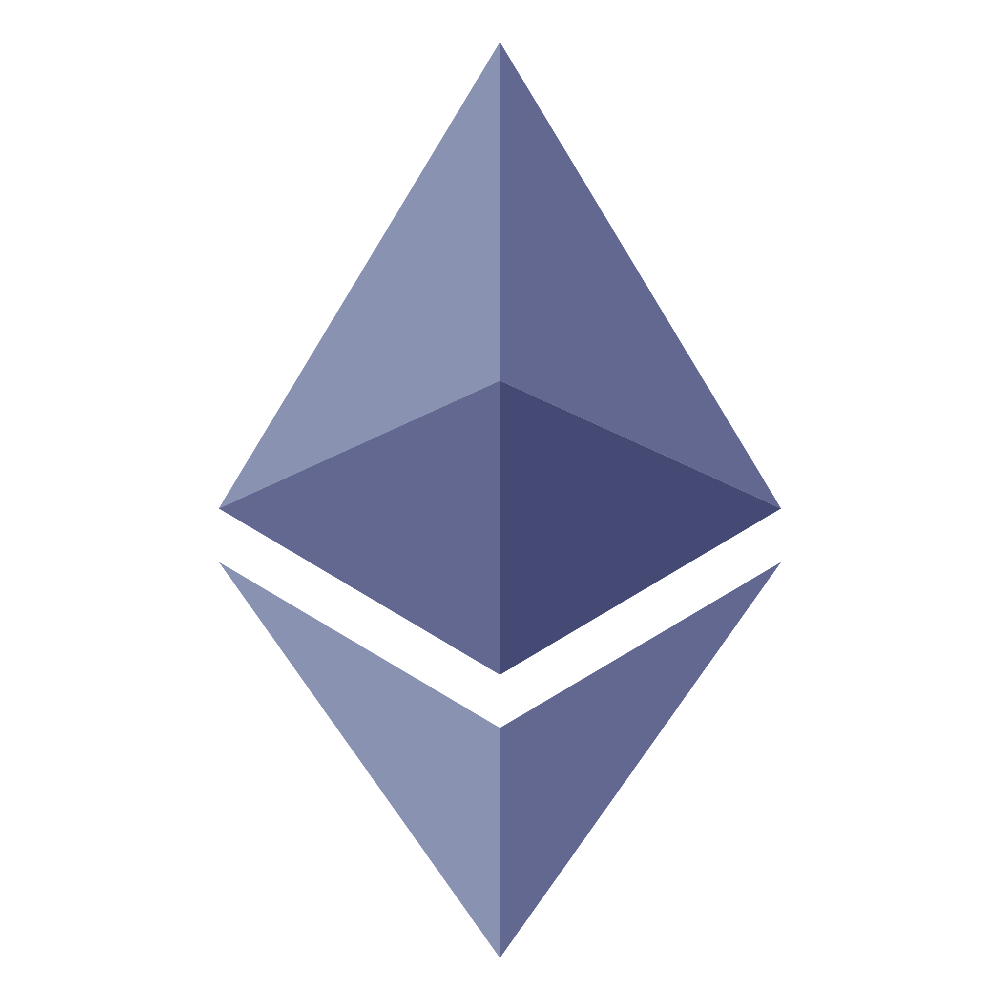

Топ 10 криптовалют на май 2022 года
| № | Название | цена в долларах | Описание |
| 1 | Bitcoin (btc) |
43 000 | Первая и самая популярная криптовалюта. Сейчас одна монета ВТС стоит около $43 тыс. Капитализация биткоина превысила отметку в $1,1 трлн на начало 2022 года. Биткоин торгуется на многих биржах и является основным объектом криптоинвестиций. Особенность этой монеты в том, что его курс прямо влияет на стоимость большого количества других цифровых валют. При этом сам биткоин является менее волатильным по сравнению с другими криптовалютами. |
| 2 |  Ethereum (eth) |
4 000 | Эта децентрализованная вычислительная платформа была создана на базе собственного блокчейна. В основе её работы лежит исполнение смарт контрактов. У платформы Ethereum есть своя криптовалюта – ETH. Она используется для расчетов внутри системы и торгуется на различных биржах. Состоянием на октябрь 2021 года насчитывается более 118 млн этих монет. В отличие от ВТС предельный объем ETH не установлен. Его рыночная капитализация превышает отметку в $353 млрд. |
| 3 | Binance coin (bnb) |
300 | Это главный токен в системе криптовалютной биржи Binance, а также в блокчейнах Binance Chain и Binance Smart Chain. Майнить эту монету нельзя. BNB ценен тем, что его можно использовать в качестве платежного средства как на самой бирже, так и во многих сервисах за ее пределами. |
| 4 | Binance USD (busd) |
1 | Стоимость Binance USD составляет 1 доллар, поскольку он является цифровым аналогом этой фиатной валюты. Рыночная капитализация данного актива превысила уровень $13,5 млрд. Это регулируемая криптовалюта, которая привязана к доллару США. Она обеспечена фиатной валютой – на каждый выпущенный BUSD у Binance есть в резерве $1. Такой формат работы стейблкоина позволяет обменивать его на доллары и наоборот. |
| 5 | Polkadot (dot) |
20 | Структура Polkadot является одной из самых сложных среди всех активов на крипторынке. Будучи opensource-протоколом, DOT поддерживает технологию шардинга и обеспечивает взаимодействие отдельных блокчейнов. Таким образом при помощи Polkadot можно передавать любые активы и данные между разными цепями и платформами. |
| 6 | Litecoin (ltc) |
100 | Основная цель, ради которой создавался Litecoin – обеспечение безопасных, недорогих и быстрых платежей в блокчейне. При помощи LTC легко оплачиваются различные товары и услуги в США и Европе. По всему миру уже существует множество терминалов, где Лайткоин обменивается на фиатную валюту. |
| 7 | Ripple (xrp) |
1 | Криптовалютная платформа для платёжных систем, ориентированная на операциях с обменом валют без возвратных платежей. Разработана компанией Ripple. Особенностью является консенсусный реестр (ledger). Система запущена в 2012 году. Протокол поддерживает «токены», представляющие фидуциарные деньги, криптовалюту, биржевые товары или другие объекты, такие как мили часто летающих пассажиров или минуты мобильной связи. По своей сути Ripple базируется на открытой разделённой базе данных, использует процесс согласования, что позволяет делать обмен в распределённом процессе. Внутренняя криптовалюта сети Ripple именуется XRP. |
| 8 | Ethereum classic (etc) |
30 | Блокчейн-криптоплатформа разработки децентрализованных приложений на базе смарт-контрактов с открытым исходным кодом. Представляет из себя децентрализованную Тьюринг-полную виртуальную машину, Виртуальную Машину Эфириума (EVM), которая может исполнять программы на публичных узлах сети. Ethereum Classic предоставляет валюту «Эфир» (Классический Эфир, Classic Ether, ETC), который может передаваться от одного участника сети другому и используется для оплаты вычислений, производимых публичными узлами сети, а также возможность создавать собственные цифровые активы (токены) на блокчейне Ethereum Classic. Эфир, оплаченный за произведенные вычисления, называется «Газ» (Gas). Газ служит не только для оплаты за произведённые вычисления, но и предотвращает DDOS-атаки на сеть. Ethereum Classic появился как результат несогласия с принятым Ethereum Foundation «The DAO» (англ.) хард-форком. Он объединил членов сообщества Ethereum, которые отвергли DAO Hard Fork на философских основаниях, которые были изложены в Декларации независимости Эфириум Классик. Люди, которые имели на балансе ETH до момента ДАО хард-форка (1900000 блок) получили столько же ETC после совершения хард-форка. |
| 9 | Poligon (matic) |
2 | Это токен Ethereum, на базе которого работает сеть Polygon, служащая для масштабирования Ethereum. Цель Polygon — обеспечить более быстрое и дешевое проведение транзакции в Ethereum с помощью боковых цепей 2-го уровня, то есть блокчейнов, которые работают параллельно основному блокчейну Ethereum. Пользователи могут отправлять токены Ethereum на адрес смарт-контракта Polygon, совершать операции с ними в Polygon, а затем выводить их обратно в основной блокчейн Ethereum. Токены MATIC используются для уплаты комиссий за транзакции и участия в работе консенсуса «доказательство доли владения». |
| 10 | Avalanche (avax) |
60 | Цель Avalanche — увеличить масштабирование без ущерба для скорости и децентрализации. Основу платформы составляют три блокчейна: чейн биржи (X-Chain), чейн контракта (C-Chain) и чейн платформы (P-Chain). X-Chain используют для создания активов и торговли. C-Chain предназначен для создания смарт-контрактов. P-Chain согласует между собой валидаторов и подсети. |
Свежий топ криптовалют можно найти на сайте coinmarketcap.com